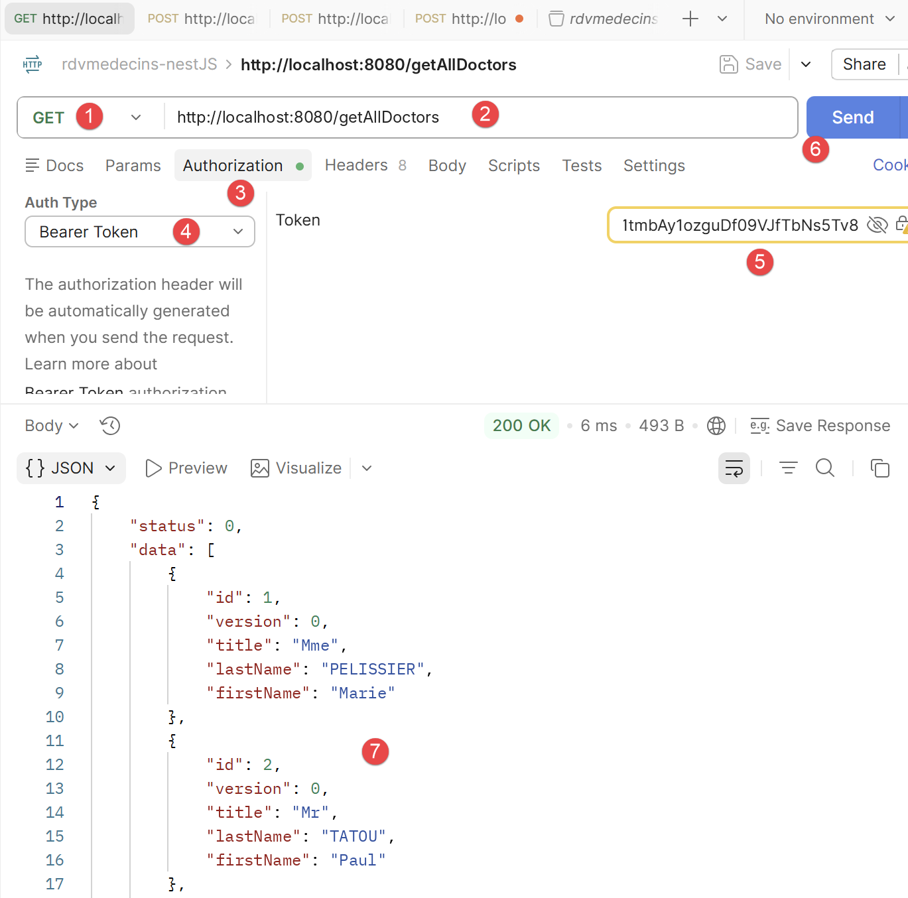

3. Kapitel 2 - Installation des [NestJS]-Servers
Der in diesem Dokument beschriebene [Kotlin]-Client benötigt einen Server, den er abfragen kann: den [NestJS]-Server für die Anwendung [RdvMedecins], der diesem Dokument im Ordner [rdvmedecins-nestjs-server] beiliegt. Da dieses Dokument den Schwerpunkt auf [Kotlin] legt, wird dieser Server als „Blackbox“ behandelt: Dieses Kapitel erklärt, wie man ihn installiert, konfiguriert, seine [MySQL]-Datenbank erstellt, ihn startet und testet, untersucht aber seinen Code nicht. Leser, die [NestJS] kennenlernen möchten, finden das Dokument „Einführung in die Sprache TypeScript und das Framework NestJS“ (2026).
Dieses Kapitel ist eine exakte Wiederholung von Kapitel 2 des Kurses „Ein Client-Server-Beispiel - Flutter / NestJS (2026)“: Der Server, seine Datenbank und seine Tests sind genau dieselben. Leser, die diesen Server bereits für den Flutter-Kurs installiert haben, können direkt zum letzten Abschnitt dieses Kapitels springen, „Den Kotlin-Client zum ersten Mal starten“.
3.1. Laragon installieren
Um die [MySQL]-Datenbank zu erstellen, die vom [NestJS]-Server verwendet wird, nutzen wir das Werkzeug Laragon. Stand September 2026 ist Laragon unter der URL [Download Laragon – Fast & Modern Dev Environment ] erhältlich. Laragon enthält Werkzeuge, mit denen sich ein PHP-Server und der DBMS-Server [MySQL] installieren lassen:

- in [1] ein Apache-Webserver;
- in [2] das DBMS [MySQL];
- in [3] ein Werkzeug für Nachrichten, das wir nicht verwenden werden;
- [4] startet alle Dienste (Apache, [MySQL], MailPit);
- [5] zeigt die Webseite der URL [http://localhost] an. Standardmäßig verweist diese URL auf den Ordner <laragon-install>\www, wobei <laragon-install> der Installationsordner von Laragon ist;
- in [6] wird das Werkzeug HeidiSQL gestartet, mit dem sich MySQL-Datenbanken verwalten lassen. Mit diesem Werkzeug erstellen wir die Datenbank, die vom Server [RdvMedecins] verwendet wird;
- in [7] wird ein Terminal geöffnet, in dessen PATH sich alle von Laragon benötigten Programme befinden;
- in [8] wird der Windows-Explorer in dem Ordner geöffnet, der der URL [http://localhost] zugeordnet ist;
Der Installationsordner von Laragon enthält die folgenden Elemente:
 |
- In [1] enthält der Ordner [bin] zahlreiche Anwendungen:
 |
- in [1] der Apache-Webserver;
- in [2] ein Befehlszeilen-Terminal;
- [3] ein Client ([git]) zur Verwaltung verschiedener Versionen eines Projekts;
- [4] ein Datenbankverwaltungswerkzeug;
- [5] ein Mail-Manager;
- [6] das DBMS [MySQL];
- [7] ein weiterer Webserver;
- in [8] [node.js] zum Ausführen von JavaScript-Skripten;
- [9] ein Texteditor;
- [10] der PHP-Interpreter;
- [11] der [Python]-Interpreter;
- [12] ein Cache-Server;
Laragon bringt eine umfassende Entwicklungsumgebung mit. In diesem Kurs verwenden wir nur das DBMS [MySQL] [6] und das Werkzeug [heidisql] zu dessen grafischer Verwaltung;
3.2. Installation und Konfiguration des [NestJS]-Servers
Der Ordner [rdvmedecins-nestjs-server] hat die folgende Verzeichnisstruktur:
Jeder Unterordner von [src/] enthält eine eigene [README.md]-Datei, die den Zweck der enthaltenen Dateien zusammenfasst. Der Quellcode dieser Dateien wird in diesem Dokument nicht behandelt.
Geben Sie im Ordner [rdvmedecins-nestjs-server] in einem Terminal die folgenden Befehle ein:
Die Datei [.env] legt Umgebungsvariablen fest:
Passen Sie die neu erstellte Datei [.env] an Ihre [MySQL]-Installation an (Benutzername, Passwort, Port). Da die Authentifizierung hinzugefügt wurde, enthält diese Datei außerdem einen Schlüssel namens JWT_SECRET: Der Beispielwert genügt, um diesem Dokument zu folgen, muss aber vor jedem realen Einsatz durch eine zufällige, nur Ihnen bekannte Zeichenfolge ersetzt werden.
3.3. Die Datenbank erstellen
Die Datenbank [dbrdvmedecins] übernimmt die Struktur des ursprünglichen Dokuments (2014, Spring 4 / [MySQL] 5): dieselben Tabellen – [doctors], [clients], [slots], [appointments] –, dieselben Fremdschlüssel, dieselbe Eindeutigkeitsbedingung. Die einzige Neuerung, die mit dem Schritt „Authentifizierung“ dieser Portierung hinzukommt: die Tabelle [users]. Die Beziehungen zwischen diesen Tabellen sind wie folgt: Ein Arzt ([doctors]) hat mehrere Zeitfenster ([slots], Fremdschlüssel [doctor_id]); ein Termin ([appointments]) verknüpft einen Tag, ein Zeitfenster (und damit einen Arzt) und einen Kunden ([clients]); die Tabelle [users] ist von den anderen vier unabhängig: Sie dient ausschließlich der Authentifizierung.
3.3.1. [database/dbrdvmedecins.sql]

1 2 3 4 5 6 7 8 9 10 11 12 13 14 15 16 17 18 19 20 21 22 23 24 25 26 27 28 29 30 31 32 33 34 35 36 37 38 39 40 41 42 43 44 45 46 47 48 49 50 51 52 53 54 55 56 57 58 59 60 61 62 63 64 65 66 67 68 69 70 71 72 73 74 75 76 77 78 79 80 81 82 83 84 85 86 87 88 89 90 91 92 93 94 95 96 97 98 99 100 101 102 103 104 105 106 107 108 109 110 111 112 113 114 115 116 117 118 119 120 121 122 123 124 125 126 127 128 129 130 131 | |
Gehen wir diesen Code durch:
- Zeilen 20–21: [CREATE DATABASE IF NOT EXISTS dbrdvmedecins …] gefolgt von [USE dbrdvmedecins] – erstellt die Datenbank, falls sie noch nicht existiert (Zeichensatz [utf8mb4], der alle Unicode-Zeichen einschließlich Akzenten unterstützt), und wählt sie dann aus: Alle folgenden Anweisungen beziehen sich auf sie. Diese beiden Zeilen müssen unbedingt ZUERST stehen: Würden sie nach [DROP TABLE …] ausgeführt, schlügen sie fehl, weil keine Datenbank ausgewählt ist (Fehler [No database selected]);
- Zeilen 24–28: [DROP TABLE IF EXISTS …] – das Skript beginnt bei jeder Ausführung mit einer leeren Datenbank, und zwar in umgekehrter Reihenfolge der Abhängigkeiten (beginnend mit
appointments, das aufslotsundclientsverweist, bis hin zuusers, auf das niemand verweist): [MySQL] würde sich weigern, eine Tabelle zu löschen, auf die noch ein Fremdschlüssel verweist; - Zeile 58: [doctor_id INT NOT NULL], dann Zeile 63: [CONSTRAINT fk_slots_doctor FOREIGN KEY …] – ein Zeitfenster gehört immer zu einem Arzt;
- Zeile 78: [CONSTRAINT unq1_appointments UNIQUE (day, slot_id)] – die zentrale Geschäftsregel der Anwendung: Ein einzelnes Zeitfenster kann an einem bestimmten Tag nur einmal gebucht werden. Diese Bedingung, und nur sie, verhindert eine Doppelbuchung – weder der Validator noch die Geschäftslogik-Schicht prüfen sie noch einmal ausdrücklich;
- Zeilen 84–91: [CREATE TABLE users (…)] – die in diesem Schritt hinzugefügte Tabelle.
loginist UNIQUE (zwei Benutzer können nicht dieselbe Anmeldekennung haben);passwordspeichert ein mit bcrypt gehashtes Passwort (niemals im Klartext); role ist entweder 'ADMIN' oder 'USER' – eine einzelne Textspalte, während das ursprüngliche Dokument drei Tabellen (users, roles, users_roles) verwendete, um mehrere Rollen pro Benutzer zu ermöglichen. Da diese Anwendung nur zwei sich gegenseitig ausschließende Rollen benötigt, wäre die ursprüngliche Many-to-many-Beziehung überdimensioniert gewesen; - Zeilen 129–131: [INSERT INTO users …] – zwei Demo-Konten, admin/admin (Rolle ADMIN) und user/user (Rolle USER), mit bereits per bcrypt gehashten Passwörtern (10 Salting-Runden) – niemals im Klartext, auch nicht in diesem Demo-Skript.
3.3.2. Das Skript mit HeidiSQL ausführen
Um die [MySQL]-Datenbank zu erstellen, die der [NestJS]-Server benötigt, gehen wir wie folgt vor:
 |
- In [1] müssen alle Dienste gestartet sein;
- in [2] ermöglicht die Option [Database] die Verwaltung der Datenbank;
Die Option [Database] startet ein Hilfsprogramm namens HeidiSQL:
 |
- In [1] können Sie verschiedene DBMS-Optionen auswählen. Als Standardwert ist das DBMS MySQL vorgegeben. Das ist in Ordnung;
- in [2] melden Sie sich bei HeidiSQL an;
 |  |
- In [1-2] führen Sie die SQL-Datei aus und wählen dann die Datei [dbrdvmedecins.sql] aus, die Sie im Ordner [rdvmedecins-nestjs-server/database] finden:

Die Ausführung der Datei [3] erstellt die Datenbank [dbrdvmedecins], die vom Server [NestJS] verwendet wird. Um sie anzuzeigen, drücken Sie in HeidiSQL F5, um die Anzeige zu aktualisieren:

Die Datenbank [dbrdvmedecins] wurde erstellt. Sie können ihren Inhalt ansehen:

- In [1-3] die Tabelle [clients];
- [id] ist der Primärschlüssel der Tabelle;
- [version] ist die Versionsnummer der Zeile. Diese Nummer wird bei jeder Änderung der Zeile erhöht;
- [title, last_name, first_name] identifizieren die Person;

- in [1-3] die Tabelle [doctors];
- [id] ist der Primärschlüssel der Tabelle;
- [version] ist die Versionsnummer der Zeile;
- [title, last_name, first_name] identifizieren die Person;

- In [1-3] die Tabelle der Termin-Zeitfenster der Ärzte:
- [id]: Primärschlüssel;
- [version]: Versionsnummer der Zeile;
- [doctor_id]: Fremdschlüssel, der auf den Primärschlüssel des Arztes verweist;
- [start_hour, start_minute]: Stunde und Minuten des Beginns des Termins. So bedeutet [8,20] 8:20 Uhr;
- [end_hour, end_minute]: Stunde und Minuten des Endes der Sprechstunde.

- In [1-3] die Tabelle [appointments] der vereinbarten Termine;
- [id]: Primärschlüssel;
- [version]: Versionsnummer;
- [day]: Datum des Termins;
- [slot_id]: Fremdschlüssel, der auf den Primärschlüssel des Termin-Zeitfensters verweist. Da ein Zeitfenster mit einem Arzt verknüpft ist, wissen wir, welcher Arzt diesen Termin wahrnimmt;
- [client_id]: Fremdschlüssel auf die Nummer (Primärschlüssel) des Kunden, der den Termin anfragt;

- in [1-3] die Tabelle [users], die die Benutzer auflistet, die die Anwendung [NestJS] nutzen dürfen;
- [id, version]: Primärschlüssel, Versionsnummer;
- [login, password]: Anmeldedaten des Benutzers;
- [name]: Name des Benutzers;
- [role]: die Rolle des Benutzers. [ADMIN] hat vollen Zugriff. [USER] hat nur Lesezugriff. Dieser Benutzer kann den Terminkalender eines Arztes einsehen, aber keinen Termin vereinbaren oder stornieren;
3.4. Den [NestJS]-Server starten
Starten Sie alle Laragon-Dienste ([Start All]), falls noch nicht geschehen. Starten Sie dann den NestJS-Server in einem VSCode-Terminal für das NestJS-Projekt:
Die Konsole zeigt der Reihe nach an: den Start des [NestJS]-Moduls, die Liste der vom Controller bereitgestellten Routen und anschließend die Bestätigung des Starts:
Diese Konsolenausgabe bestätigt, dass der Server tatsächlich auf Port 8080 lauscht – genau derselbe Port wie beim Spring-Boot-Server im ursprünglichen Dokument, der aus diesem Grund bewusst gewählt wurde.
Diese Routen bilden die JSON-API, die der Client [Kotlin] in Kapitel 4 nutzen wird. [POST /login] ist die einzige öffentliche Route: Sie liefert ein Token (JWT), das alle anderen Routen im Header verlangen ([Authorization: Bearer <token>]). Die lesenden Routen ([GET …]) sind für die Rollen ADMIN und USER zugänglich; die beiden Routen, die Daten ändern, [POST /addAppointment] und [POST /deleteAppointment], sind der Rolle ADMIN vorbehalten. Fachliche Antworten sind in ein Objekt [{ status, data }] verpackt, bei dem [status] bei erfolgreicher Operation auf 0 gesetzt ist.
3.5. Den Server mit einem Browser testen
Da die Authentifizierung hinzugefügt wurde, erfordern alle Routen unter [RdvMedecinsController] ein gültiges JWT-Token; ein Browser allein kann sie daher nicht mehr direkt testen. Zum Beispiel:
liefert jetzt ohne Token den Fehler 401 Unauthorized:

Das ist das erwartete Verhalten: Diese Antwort bestätigt, dass der Server seine Routen ordnungsgemäß schützt. Postman (nächster Abschnitt) wird benötigt, um ein Token zu erhalten und es anschließend zu verwenden.
3.6. Den [NestJS]-Server mit Postman testen
Das Werkzeug Postman ist unter der URL [https://www.postman.com/downloads/] erhältlich. Möglicherweise müssen Sie ein Konto erstellen.
Starten Sie alle Laragon-Dienste und öffnen Sie dann die Postman-Desktopanwendung:
 |  |
- In [1-2] erstellen Sie eine HTTP-Anfrage an den Server zur Verwaltung der Arzttermine;
3.6.1. Anmelden und ein Token erhalten
- Erstellen Sie eine neue Postman-Anfrage mit der Methode POST und der URL http://localhost:8080/login;
- Wählen Sie auf der Registerkarte [Body] die Option „raw“, dann das Format JSON und geben Sie ein: {"login": "admin", "password": "admin"} (oder „user/user“, um die Rolle USER zu testen);
- Senden Sie die Anfrage ab.

- in [1-2] die POST-Anfrage an den [NestJS] -Server, der auf Port 8080 läuft;
- in [3-5] der Body der Anfrage. Er übermittelt dem Server die JSON-Zeichenfolge mit den Anmeldedaten des Benutzers, der sich anmelden möchte, hier admin/admin;
- in [6] die Antwort des Servers;
- in [7] das Authentifizierungs-Token, das nachfolgende Anfragen an den Server senden müssen, um zu zeigen: „Ich bin bereits authentifiziert“;
Kopieren Sie den Wert von accessToken: Dies ist das Token, das ab jetzt in jeder weiteren Anfrage mitgesendet werden muss. Im obigen Beispiel ist das zu kopierende Token „eyJ...zoM“ (ohne die Anführungszeichen).
3.6.2. Eine geschützte Route mit dem Token aufrufen
Wählen Sie für GET /getAllDoctors (oder jede andere Route des RdvMedecinsController) in Postman auf der Registerkarte Authorization den Typ Bearer Token und fügen Sie das oben kopierte Token ein (Postman fügt dann automatisch den Header Authorization: Bearer <token> hinzu).

- in [1-2] die an den Server gesendete Anfrage. Sie fordert die Liste der Ärzte in der Datenbank an;
- In [3-5] muss die Anfrage das Authentifizierungs-Token senden. Wählen Sie in [4] [Bearer Token] und fügen Sie in [5] das zuvor kopierte Authentifizierungs-Token ein;
- in [7] die Antwort des Servers;
3.6.3. Die POST-Routen (/addAppointment, /deleteAppointment) testen
Gehen Sie wie oben vor (Methode POST, JSON-Body, Bearer Token), genauso wie das ursprüngliche Dokument die Chrome-Erweiterung „Advanced Rest [Client]“ für dieselben Routen verwendete.
Hinweis: Die folgenden Postman-Anfragen finden Sie in der Collection [rdvmedecins-nestJS.postman_collection.json]:

Drücken Sie in Postman Strg-0, um die Collection zu laden:

- Klicken Sie auf [1], um die Collection zu laden, und wählen Sie die Collection-Datei aus. Sobald die Collection geladen ist, zeigt sie ihre Anfragen an:

So testen Sie /addAppointment mit dem Token eines Kontos mit der Rolle ADMIN:
- Postman-Anfrage, Methode POST, URL http://localhost:8080/addAppointment;
- Authorization-Registerkarte: Bearer Token, Admin-Token;
- [Body]-Registerkarte, raw, JSON: {"day": "2026-09-13", "clientId": 1, "slotId": 5};
- Senden Sie die Anfrage ab.

- in [3-5] der Body der Anfrage;

Sie können mit HeidiSQL überprüfen, dass der Datenbank ein Termin hinzugefügt wurde:

Um /deleteAppointment zu testen, gehen Sie genauso vor, mit dem Body {"appointmentId": 2} (die ID des zu stornierenden Termins (8) oben).

- in [4] die Nummer oben, die den zu löschenden Termin bezeichnet;

- in [5-7] das Authentifizierungs-Token;
- in [9] die Antwort des Servers. [status=0] zeigt an, dass die Operation erfolgreich war. Sie können dies mit HeidiSQL überprüfen:

- in [3] existiert der Termin Nr. 2 nicht mehr;
Probieren Sie es aus: Wiederholen Sie dieselbe Anfrage /addAppointment mit dem Token des Kontos USER (user/user) statt mit dem Admin-Token: Die Antwort lautet dann 403 Forbidden mit der Meldung „role [USER] does not allow this action (required role: ADMIN)“ – eine anschauliche Demonstration der rollenbasierten Zugriffskontrolle, die der Server umsetzt.
3.7. Den Kotlin-Client zum ersten Mal starten
Öffnen Sie bei laufendem [NestJS]-Server das Projekt [rdvmedecins-kotlin-client] in Android Studio (siehe Kapitel 1) und starten Sie den Emulator. In der Symbolleiste von Android Studio sollte die Geräte-Dropdown-Liste den Emulator anzeigen (zum Beispiel [Pixel 8 API 37]); die Schaltfläche [Run] (das grüne Dreieck) daneben kompiliert die App, installiert sie auf dem Emulator und startet sie.
Ohne Android Studio lassen sich dieselben Schritte über die Befehlszeile ausführen: Die Gradle-Aufgabe [installDebug] kompiliert und installiert die App, und anschließend startet [adb] sie:
- [installDebug]: erstellt die App (wie [assembleDebug]; siehe Kapitel 1) und installiert sie dann auf dem verbundenen Gerät – Emulator oder Smartphone;
- [adb shell am start -n <application>/<activity>]: weist den Android Activity Manager ([am], Activity Manager) an, die Activity [MainActivity] der App [fr.rdvmedecins.client] zu starten – was das System tut, wenn Sie auf das App-Symbol tippen.

Zuerst erscheint der Anmeldebildschirm, genau wie bei den vorherigen Clients dieses Kurses: Mit der Datenbank des Servers werden zwei Demo-Konten mitgeliefert, [admin]/[admin] (Rolle [ADMIN], voller Zugriff) und [user]/[user] (Rolle [USER], nur Lesezugriff). Mit den Schaltflächen „FR“/„EN“ in der oberen rechten Ecke lässt sich die Oberfläche auch schon vor der Anmeldung auf Französisch umschalten.
Das Feld „Server URL“ enthält standardmäßig [http://10.0.2.2:8080]: Im Emulator bezeichnet die spezielle Adresse [10.0.2.2] den Computer, auf dem der Emulator läuft, also den Server [NestJS]. Schlägt die Verbindung nach etwa zehn Sekunden fehl (Meldung: „Incorrect login or password.“), liegt es meist daran, dass diese Adresse nicht antwortet: Dies geschah auf dem Computer, der zum Verfassen dieses Dokuments verwendet wurde. Die Lösung wird in Kapitel 5 beschrieben: der Befehl [adb reverse tcp:8080 tcp:8080], gefolgt von der URL [http://localhost:8080].